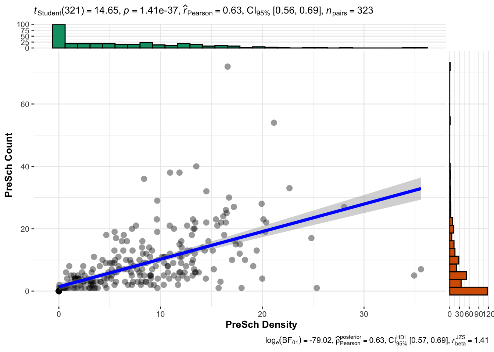
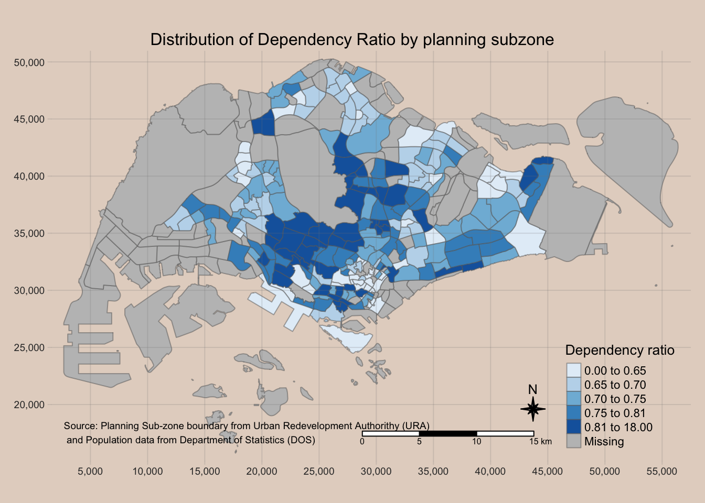

pacman::p_load(tidyverse,sf,ggstatsplot,tmap)ICE 2:
Getting Started
Importing Data
2014 Sub-zone Data (shp & kml)
mpsz14_shp <- st_read(dsn = 'data/geospatial/', layer = 'MP14_SUBZONE_WEB_PL')Reading layer `MP14_SUBZONE_WEB_PL' from data source
`/Users/williamtjw/is415-gaa-williamtjw/resources/ICEs/ex2/data/geospatial'
using driver `ESRI Shapefile'
Simple feature collection with 323 features and 15 fields
Geometry type: MULTIPOLYGON
Dimension: XY
Bounding box: xmin: 2667.538 ymin: 15748.72 xmax: 56396.44 ymax: 50256.33
Projected CRS: SVY21# layer means sf will search for the engine(?)
# layer wont need extension because it knows to seek for a shapefile
#'<-' or '=' works on windows+macOSNote: R is a OOP enabled language, sf being the object class
View(mpsz14_shp)mpsz14_kml = st_read('data/geospatial/MasterPlan2014SubzoneBoundaryWebKML.kml')
# supposed to trigger a error message saying its unsupported / corruptedMasterPlan2014SubzoneBoundaryWebKML.kml from data.gov.sg is apparently corrupted.
This is a quick fix:
st_write(mpsz14_shp, 'data/geospatial/MP14_SUBZONE_WEB_PL.kml', delete_dsn = TRUE)Deleting source `data/geospatial/MP14_SUBZONE_WEB_PL.kml' using driver `KML'
Writing layer `MP14_SUBZONE_WEB_PL' to data source
`data/geospatial/MP14_SUBZONE_WEB_PL.kml' using driver `KML'
Writing 323 features with 15 fields and geometry type Multi Polygon.2019 Subzone Boundary (No sea) (kml, shp, geojson)
mpsz19_kml = st_read('data/geospatial/MasterPlan2019SubzoneBoundaryNoSeaKML.kml')Reading layer `URA_MP19_SUBZONE_NO_SEA_PL' from data source
`/Users/williamtjw/is415-gaa-williamtjw/resources/ICEs/ex2/data/geospatial/MasterPlan2019SubzoneBoundaryNoSeaKML.kml'
using driver `KML'
Simple feature collection with 332 features and 2 fields
Geometry type: MULTIPOLYGON
Dimension: XY, XYZ
Bounding box: xmin: 103.6057 ymin: 1.158699 xmax: 104.0885 ymax: 1.470775
z_range: zmin: 0 zmax: 0
Geodetic CRS: WGS 84mpsz19_shp <- st_read(dsn = 'data/MPSZ-2019/', layer = 'MPSZ-2019')Reading layer `MPSZ-2019' from data source
`/Users/williamtjw/is415-gaa-williamtjw/resources/ICEs/ex2/data/MPSZ-2019'
using driver `ESRI Shapefile'
Simple feature collection with 332 features and 6 fields
Geometry type: MULTIPOLYGON
Dimension: XY
Bounding box: xmin: 103.6057 ymin: 1.158699 xmax: 104.0885 ymax: 1.470775
Geodetic CRS: WGS 84mpsz19_geojson <- st_read('data/geospatial/MasterPlan2019SubzoneBoundaryNoSeaGEOJSON.geojson')Reading layer `MasterPlan2019SubzoneBoundaryNoSeaGEOJSON' from data source
`/Users/williamtjw/is415-gaa-williamtjw/resources/ICEs/ex2/data/geospatial/MasterPlan2019SubzoneBoundaryNoSeaGEOJSON.geojson'
using driver `GeoJSON'
Simple feature collection with 332 features and 2 fields
Geometry type: MULTIPOLYGON
Dimension: XY, XYZ
Bounding box: xmin: 103.6057 ymin: 1.158699 xmax: 104.0885 ymax: 1.470775
z_range: zmin: 0 zmax: 0
Geodetic CRS: WGS 84Note: geojson format is very messy because the data is buried under html tags so lines of code is needed to extract; while in the kml / shp formats the data is readily accessible
Note: under ‘geometry’ if the values tend to be large, its because its in PCS (measure in meters)
In-class discussion
Singapore Residents by Planning Area / Subzone, Age Group, Sex and Floor Area of Residence 2023
Note: use the .csv file
popdata2023 = read_csv('data/respopagesexfa2023.csv')Rows: 75696 Columns: 7
── Column specification ────────────────────────────────────────────────────────
Delimiter: ","
chr (5): PA, SZ, AG, Sex, FA
dbl (2): Pop, Time
ℹ Use `spec()` to retrieve the full column specification for this data.
ℹ Specify the column types or set `show_col_types = FALSE` to quiet this message.Pre-School Location (both kml & geojson )
preschool_kml = st_read('data/PreSchoolsLocation.kml')Reading layer `PRESCHOOLS_LOCATION' from data source
`/Users/williamtjw/is415-gaa-williamtjw/resources/ICEs/ex2/data/PreSchoolsLocation.kml'
using driver `KML'
Simple feature collection with 2290 features and 2 fields
Geometry type: POINT
Dimension: XYZ
Bounding box: xmin: 103.6878 ymin: 1.247759 xmax: 103.9897 ymax: 1.462134
z_range: zmin: 0 zmax: 0
Geodetic CRS: WGS 84preschool_geojson <- st_read('data/PreSchoolsLocation.geojson')Reading layer `PreSchoolsLocation' from data source
`/Users/williamtjw/is415-gaa-williamtjw/resources/ICEs/ex2/data/PreSchoolsLocation.geojson'
using driver `GeoJSON'
Simple feature collection with 2290 features and 2 fields
Geometry type: POINT
Dimension: XYZ
Bounding box: xmin: 103.6878 ymin: 1.247759 xmax: 103.9897 ymax: 1.462134
z_range: zmin: 0 zmax: 0
Geodetic CRS: WGS 84Transforming Coordinate System
mpsz19_shp_3414 = mpsz14_shp %>% # pipe operator; saves memory
st_transform(crs = 3414)preschool_kml_3414 = preschool_kml %>%
st_transform(crs = 3414)Checking CRS
st_crs(mpsz19_shp)Coordinate Reference System:
User input: WGS 84
wkt:
GEOGCRS["WGS 84",
DATUM["World Geodetic System 1984",
ELLIPSOID["WGS 84",6378137,298.257223563,
LENGTHUNIT["metre",1]]],
PRIMEM["Greenwich",0,
ANGLEUNIT["degree",0.0174532925199433]],
CS[ellipsoidal,2],
AXIS["latitude",north,
ORDER[1],
ANGLEUNIT["degree",0.0174532925199433]],
AXIS["longitude",east,
ORDER[2],
ANGLEUNIT["degree",0.0174532925199433]],
ID["EPSG",4326]]mpsz19_shp_3414Simple feature collection with 323 features and 15 fields
Geometry type: MULTIPOLYGON
Dimension: XY
Bounding box: xmin: 2667.538 ymin: 15748.72 xmax: 56396.44 ymax: 50256.33
Projected CRS: SVY21 / Singapore TM
First 10 features:
OBJECTID SUBZONE_NO SUBZONE_N SUBZONE_C CA_IND PLN_AREA_N
1 1 1 MARINA SOUTH MSSZ01 Y MARINA SOUTH
2 2 1 PEARL'S HILL OTSZ01 Y OUTRAM
3 3 3 BOAT QUAY SRSZ03 Y SINGAPORE RIVER
4 4 8 HENDERSON HILL BMSZ08 N BUKIT MERAH
5 5 3 REDHILL BMSZ03 N BUKIT MERAH
6 6 7 ALEXANDRA HILL BMSZ07 N BUKIT MERAH
7 7 9 BUKIT HO SWEE BMSZ09 N BUKIT MERAH
8 8 2 CLARKE QUAY SRSZ02 Y SINGAPORE RIVER
9 9 13 PASIR PANJANG 1 QTSZ13 N QUEENSTOWN
10 10 7 QUEENSWAY QTSZ07 N QUEENSTOWN
PLN_AREA_C REGION_N REGION_C INC_CRC FMEL_UPD_D X_ADDR
1 MS CENTRAL REGION CR 5ED7EB253F99252E 2014-12-05 31595.84
2 OT CENTRAL REGION CR 8C7149B9EB32EEFC 2014-12-05 28679.06
3 SR CENTRAL REGION CR C35FEFF02B13E0E5 2014-12-05 29654.96
4 BM CENTRAL REGION CR 3775D82C5DDBEFBD 2014-12-05 26782.83
5 BM CENTRAL REGION CR 85D9ABEF0A40678F 2014-12-05 26201.96
6 BM CENTRAL REGION CR 9D286521EF5E3B59 2014-12-05 25358.82
7 BM CENTRAL REGION CR 7839A8577144EFE2 2014-12-05 27680.06
8 SR CENTRAL REGION CR 48661DC0FBA09F7A 2014-12-05 29253.21
9 QT CENTRAL REGION CR 1F721290C421BFAB 2014-12-05 22077.34
10 QT CENTRAL REGION CR 3580D2AFFBEE914C 2014-12-05 24168.31
Y_ADDR SHAPE_Leng SHAPE_Area geometry
1 29220.19 5267.381 1630379.3 MULTIPOLYGON (((31495.56 30...
2 29782.05 3506.107 559816.2 MULTIPOLYGON (((29092.28 30...
3 29974.66 1740.926 160807.5 MULTIPOLYGON (((29932.33 29...
4 29933.77 3313.625 595428.9 MULTIPOLYGON (((27131.28 30...
5 30005.70 2825.594 387429.4 MULTIPOLYGON (((26451.03 30...
6 29991.38 4428.913 1030378.8 MULTIPOLYGON (((25899.7 297...
7 30230.86 3275.312 551732.0 MULTIPOLYGON (((27746.95 30...
8 30222.86 2208.619 290184.7 MULTIPOLYGON (((29351.26 29...
9 29893.78 6571.323 1084792.3 MULTIPOLYGON (((20996.49 30...
10 30104.18 3454.239 631644.3 MULTIPOLYGON (((24472.11 29...Data Wrangling
Point-in-Polygon count: count the number of pre-schools in each planning sub-zone
mpsz19_shp_3414 <- mpsz19_shp_3414 %>% mutate(`PreSch Count` = lengths(st_intersects(mpsz19_shp_3414, preschool_kml_3414)))Write a single line code to perform the following tasks:
Derive the area of each planning sub-zone.
Drop the unit of measurement of the area (i.e. m^2)
Calculate the density of pre-school at the planning sub-zone level
mpsz19_shp_3414 <- mpsz19_shp_3414 %>%
mutate(
Area = units::drop_units(st_area(.)),
`PreSch Density` = `PreSch Count` / Area * 1000000
)Statistical Analysis
Using Exploratory Data Analysis (EDA) and Confirmatory Data Analysis (CDA) methods to explore and confirm the statistical relationship between Pre-school Density and Pre-school count.
mpsz19_shp_3414$`PreSch Density` <- as.numeric(as.character(mpsz19_shp_3414$`PreSch Density`))
mpsz19_shp_3414$`PreSch Count` <- as.numeric(as.character(mpsz19_shp_3414$`PreSch Count`))
mpsz19_shp_3414 <- as.data.frame(mpsz19_shp_3414)
ggscatterstats(
data = mpsz19_shp_3414,
x = `PreSch Density`,
y = `PreSch Count`,
type = 'parametric'
)Registered S3 method overwritten by 'ggside':
method from
+.gg ggplot2`stat_xsidebin()` using `bins = 30`. Pick better value with `binwidth`.
`stat_ysidebin()` using `bins = 30`. Pick better value with `binwidth`.
Prepare a data frame using the population data
popdata2023 = popdata2023 %>%
group_by(PA,SZ,AG) %>%
summarise(POP=sum(Pop)) %>%
ungroup() %>%
pivot_wider(names_from = AG,values_from = POP)`summarise()` has grouped output by 'PA', 'SZ'. You can override using the
`.groups` argument.pivot_wider() transposes the data table structure for easier function application
Examine the data structure
str(popdata2023)tibble [332 × 21] (S3: tbl_df/tbl/data.frame)
$ PA : chr [1:332] "Ang Mo Kio" "Ang Mo Kio" "Ang Mo Kio" "Ang Mo Kio" ...
$ SZ : chr [1:332] "Ang Mo Kio Town Centre" "Cheng San" "Chong Boon" "Kebun Bahru" ...
$ 0_to_4 : num [1:332] 160 860 680 600 190 730 190 530 0 150 ...
$ 10_to_14 : num [1:332] 300 1000 890 870 390 720 360 830 0 210 ...
$ 15_to_19 : num [1:332] 310 1080 1020 970 430 730 450 860 0 240 ...
$ 20_to_24 : num [1:332] 280 1210 1220 1050 480 850 520 830 0 250 ...
$ 25_to_29 : num [1:332] 290 1570 1470 1250 510 1050 590 1110 0 320 ...
$ 30_to_34 : num [1:332] 330 1950 1740 1470 400 1310 540 1400 0 260 ...
$ 35_to_39 : num [1:332] 320 1860 1640 1390 320 1060 380 1200 0 240 ...
$ 40_to_44 : num [1:332] 400 2100 1690 1580 380 1110 400 1490 0 300 ...
$ 45_to_49 : num [1:332] 440 1910 1790 1640 480 1180 520 1530 0 300 ...
$ 50_to_54 : num [1:332] 420 2070 1780 1680 550 1230 600 1400 0 340 ...
$ 55_to_59 : num [1:332] 340 2050 1980 1720 540 1310 600 1410 0 300 ...
$ 5_to_9 : num [1:332] 260 970 790 810 350 730 300 690 0 210 ...
$ 60_to_64 : num [1:332] 300 2070 2080 1710 520 1410 660 1570 0 310 ...
$ 65_to_69 : num [1:332] 270 2080 2070 1680 420 1270 630 1530 0 310 ...
$ 70_to_74 : num [1:332] 280 1980 1900 1570 370 1150 440 1480 0 230 ...
$ 75_to_79 : num [1:332] 160 1210 1410 1120 280 790 280 1050 0 150 ...
$ 80_to_84 : num [1:332] 120 760 990 710 190 580 220 750 0 90 ...
$ 85_to_89 : num [1:332] 50 360 450 360 120 310 150 400 0 50 ...
$ 90_and_Over: num [1:332] 30 200 250 210 90 180 80 210 0 30 ...Note: age ranges are not in sequential order
colnames(popdata2023) [1] "PA" "SZ" "0_to_4" "10_to_14" "15_to_19"
[6] "20_to_24" "25_to_29" "30_to_34" "35_to_39" "40_to_44"
[11] "45_to_49" "50_to_54" "55_to_59" "5_to_9" "60_to_64"
[16] "65_to_69" "70_to_74" "75_to_79" "80_to_84" "85_to_89"
[21] "90_and_Over"Note: index starts from 1
Fix the data table (override the previous)
Write a code chunk to derive a tibble data.framewith the following fields PA, SZ, YOUNG, ECONOMY ACTIVE, AGED, TOTAL, DEPENDENCY where by:
YOUNG: age group 0 to 4 until age groyup 20 to 24,
ECONOMY ACTIVE: age group 25-29 until age group 60-64,
AGED: age group 65 and above,
TOTAL: all age group, and
DEPENDENCY: the ratio between young and aged against economy active group.
popdata2023 = popdata2023 %>%
# CALCULATING AGE GROUP TOTALS
mutate(`YOUNG`=rowSums(.[3:6])+rowSums(.[14])) %>% # CREATES new col 'YOUNG'
mutate(`ECONOMY ACTIVE`=rowSums(.[7:13])+rowSums(.[15])) %>% # CREATES new col `ECONOMY ACTIVE`
mutate(`AGED`=rowSums(.[16:21])) %>% # CREATES new col `AGED`
mutate(`TOTAL`=rowSums(.[3:21])) %>% # CREATES new col `TOTAL`
mutate(`DEPENDENCY` = (`YOUNG` + `AGED`)/`ECONOMY ACTIVE`) %>% # CREATES new col `DEPENDENCY` to calculate dependency ratio
select(`PA`, `SZ`, `YOUNG`, `ECONOMY ACTIVE`, `AGED`, `TOTAL`, `DEPENDENCY`) # determines column order and contents in OUTPUT DATASETBecause R is case sensitive, convert into all same uppercase or lowercase in the datasets.
popdata2023 = popdata2023 %>%
mutate_at(
.vars = vars(PA,SZ),
.funs = list(toupper)
)Perform left-join whereby the join fields are SUBZONE_N from the mpsz19_shp sf data.frame and SZ from the popdata2023 data.frame.
mpsz_popdata2023 = left_join(mpsz19_shp_3414,popdata2023, by = c('SUBZONE_N'='SZ'))Note: In the c() function, the column names’ positions correspond to which data table is the left table
Plot the choropleth map.
tmap_mode('plot')tmap mode set to plottingtm_shape(st_sf(mpsz_popdata2023)) +
tm_fill( # either a fixed color or a color palette is mapped to the variable
'DEPENDENCY',
style = 'quantile',
palette = 'Blues',
title = 'Dependency ratio'
) +
tm_layout(
main.title = "Distribution of Dependency Ratio by planning subzone",
main.title.position = "center",
main.title.size = 1,
legend.title.size = 1,
legend.height = 0.45,
legend.width = 0.35,
bg.color = "#E4D5C9",
frame = F
) +
tm_borders(alpha = 0.5) +
tm_compass(type="8star", size = 1.5) +
tm_scale_bar() +
tm_grid(alpha =0.2) +
tm_credits("Source: Planning Sub-zone boundary from Urban Redevelopment Authorithy (URA)\n and Population data from Department of Statistics (DOS)",
position = c("left", "bottom"))